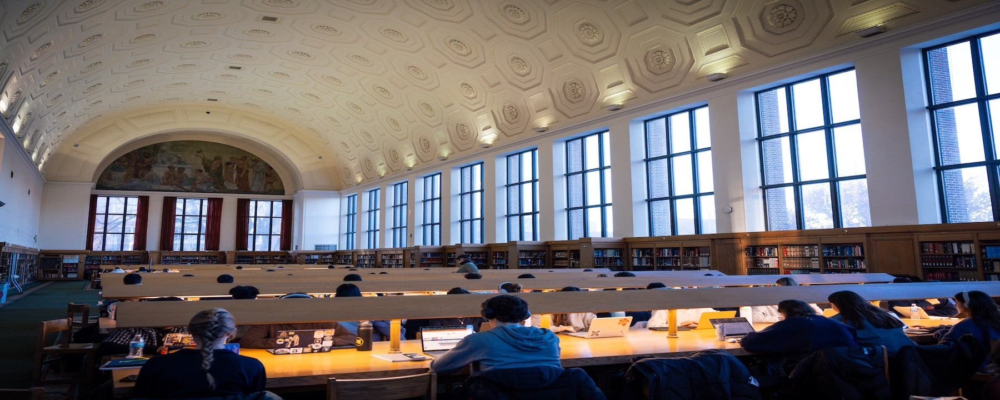
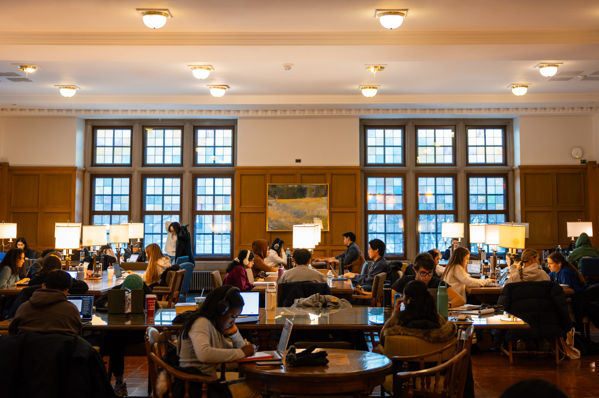

Expanding access to Yellowstone's history
UMSI students helped archive and open up access to the history of Yellowstone National Park.

Engaged learning takes many forms at UMSI, from real-world projects inside your courses to community partnerships, startups, research, and experiences abroad. Start with the goal that fits you best, then follow the link to explore what is available.
Engaged learning is a defining part of the UMSI experience. Each year, students take on real projects for real clients across Michigan, the United States, and the world.
Build confidence communicating with clients and collaborating on teams while creating deliverables you can showcase in your portfolio.
Apply design, technology, and data skills to problems that matter, working alongside partners who need your expertise.
Through hands-on courses, mentorship, pitch competitions, and access to Michigan's startup ecosystem, you can turn ideas into ventures.
Gain exposure to cutting-edge methodologies and technologies by collaborating with UMSI faculty, PhD students, and peers.
Whether you study abroad for a semester or a few weeks, you will strengthen your problem-solving skills and grow your global network.
Present a real-world project you completed through a course, program, or independent endeavor to clients and the broader community.
Engaged learning projects create real impact for real partners. Here are a few examples of what UMSI students have accomplished.

UMSI students helped archive and open up access to the history of Yellowstone National Park.
Students redesigned the website and mobile experience for a local Ann Arbor coffee company to fit its brand.
A student project worked to make disc golf more accessible to visually impaired players.
Once you have found an opportunity that interests you, prepare before you begin and start strong once you do.